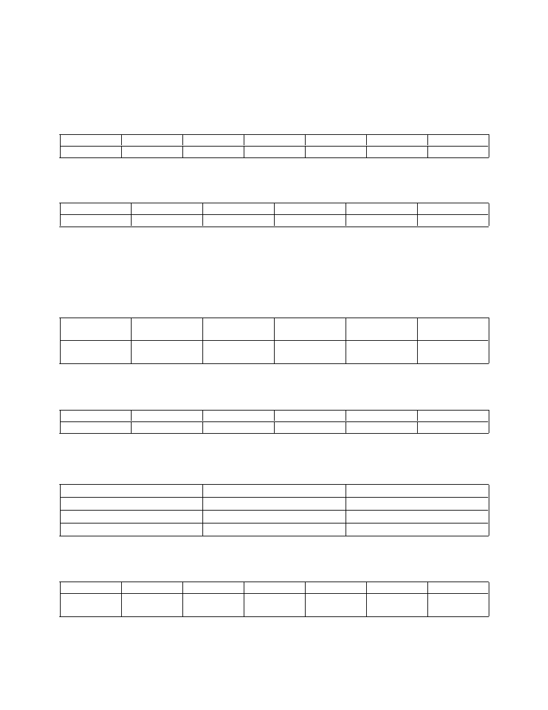

Assignment II: Unit I
Note: Submission date 12 th January 2023.
1. The rainfall recorded at two cities are given below:
City A
30
28
34
28
27
31
City B
32
26
40
25
28
34
Use appropriate measure of dispersion and comment on the variation.
2. Calculate quartile deviation for the following data:
Class interval
100-149
150-199
200-249
250-299
300-349
Frequency
15
18
14
20
17
3. Calculate Mean Deviation from median for the following data:
Marks: 52, 61, 40, 62, 47, 61, 56.
4. Calculate Mean & mean deviation from mean from the following data. Also calculate its coefficient.
No. of leaves
9
11
13
15
17
taken in a year
No. of
8
12
22
11
7
employees
5. Calculate arithmetic mean & standard deviation for the following data:
Marks
0-10
10-20
20-30
30-40
40-50
No. of students 4
10
16
12
8
6. Calculate combined mean of the two groups for the following data & hence check
which group is more consistent.
Group I
Group II
Number
100
200
Mean
50
45
S.D
5
3
7. Calculate standard deviation for the following data. Also find its coefficient of variation.
Marks
30-40
40-50
50-60
60-70
70-80
80-90
No. of
3
15
27
15
8
2
students

8. Calculate quartile deviation and its coefficient for the following data:
Class interval
Below 5
5-10
10-15
15-20
20 and above
Frequency
6
9
20
18
9
9. Calculate coefficient of range from the following data:
Marks
10-20
20-30
30-40
40-50
50-60
No. of students 8
10
12
8
4
10.Calculate mean deviation from mean for the following data:
Daily wages in Rs.
200-
400-600
600-800
800-1000
1000-1200
1200-1400
400
No. of workers
8
15
22
15
13
7